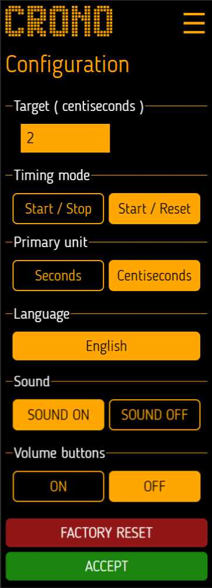
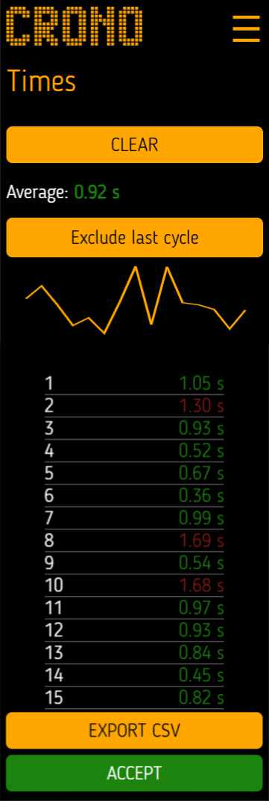
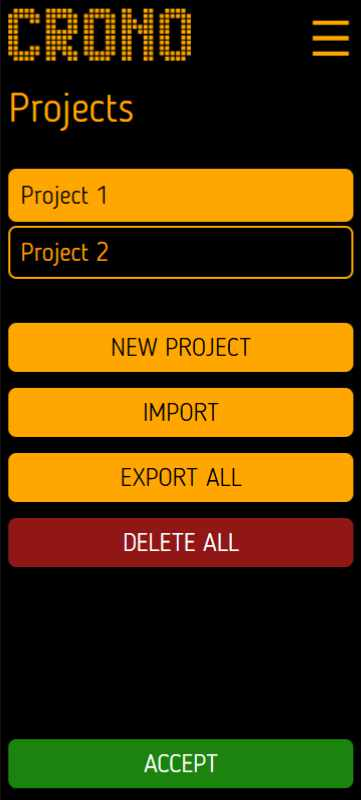
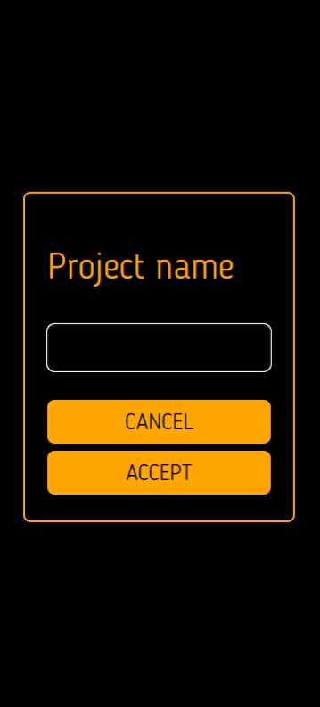
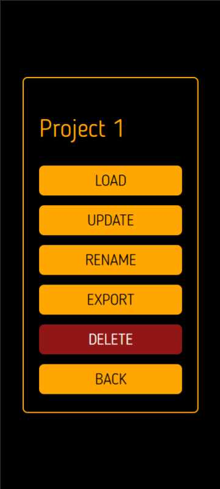
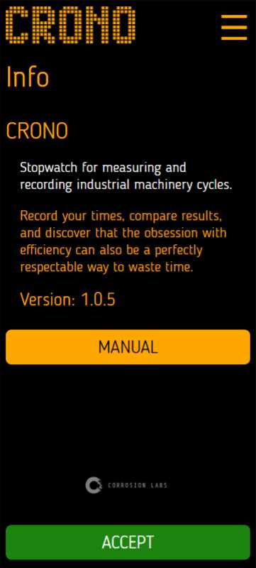

Instalación en Android
CRONO se distribuye como un archivo APK que permite instalar la aplicación directamente en dispositivos Android, sin necesidad de utilizar Google Play Store.
Pasos de instalación
Descarga el archivo APK de CRONO desde la página oficial de Corrosion Labs.
Abre el archivo descargado desde el gestor de archivos del dispositivo.
Si Android solicita autorización para instalar aplicaciones de fuentes desconocidas, permite la instalación desde la aplicación utilizada para abrir el archivo.
Pulsa INSTALAR para comenzar la instalación.
Si Google Play Protect muestra una advertencia de seguridad, consulta la información antes de continuar.
Advertencia de Google Play Protect
Google Play Protect puede mostrar el mensaje «Aplicación bloqueada para proteger tu dispositivo» porque no reconoce al desarrollador o no dispone de información suficiente sobre la aplicación.
Si has descargado CRONO desde la fuente oficial y deseas continuar:
Pulsa Más detalles en la ventana de advertencia.
Selecciona Instalar de todas formas.
Android continuará con la instalación si lo permite la configuración de seguridad del dispositivo.
Este aviso no significa necesariamente que la aplicación sea peligrosa, pero tampoco garantiza que sea segura. Comprueba siempre la procedencia del archivo antes de instalarlo.
No es necesario desactivar Google Play Protect.
Una vez instalada, CRONO aparecerá entre las aplicaciones del dispositivo y podrás utilizarla normalmente.
Pantalla principal

La pantalla principal de CRONO está diseñada para realizar mediciones de tiempos de ciclo de forma rápida y sencilla, facilitando su utilización en entornos industriales.
El cronómetro permite trabajar con dos unidades de medida: segundos y centésimas de minuto.
La imagen muestra ambas configuraciones:
Izquierda: Segundos como unidad principal y centésimas de minuto como secundaria.
Derecha: Centésimas de minuto como unidad principal y segundos como secundaria.
Las dos unidades se muestran simultáneamente. La unidad principal aparece en mayor tamaño y determina la unidad utilizada para el tiempo objetivo (TARGET) y el último ciclo registrado (LAST CYCLE).
Elementos de la pantalla
CRONO: Identifica la aplicación.
Menú (☰): Permite acceder a las funciones de configuración, registro de tiempos, gestión de proyectos e información de la aplicación.
Project 1: Muestra el nombre del proyecto activo, al que se asocian las mediciones realizadas.
Cronómetro: Muestra el tiempo transcurrido en las dos unidades disponibles, destacando la unidad principal seleccionada.
TARGET: Indica el tiempo objetivo establecido para el ciclo, expresado en la unidad principal.
LAST CYCLE: Muestra el tiempo registrado en el último ciclo, expresado en la unidad principal.
START: Inicia el cronometraje. Su funcionamiento depende del modo seleccionado en la configuración: Start / Stop o Start / Reset.
RESET: Reinicia el cronómetro, dejándolo preparado para una nueva medición.
Configuración

La pantalla Configuration permite ajustar el funcionamiento de CRONO según las necesidades de cada medición.
Desde aquí se pueden configurar los tiempos objetivo, los modos de cronometraje, las unidades de medida y las preferencias generales de la aplicación.
La pantalla dispone de desplazamiento vertical para acceder a todas las opciones.
Opciones de configuración
Target (centiseconds): Permite introducir el tiempo objetivo del ciclo. La unidad indicada entre paréntesis cambia según la unidad principal seleccionada.
Timing mode: Permite elegir entre dos modos de funcionamiento:
Start / Stop: La primera pulsación inicia el cronómetro y la segunda detiene la medición.
Start / Reset: Cada pulsación registra el tiempo del ciclo anterior e inicia inmediatamente una nueva medición.
Primary unit: Selecciona la unidad principal de medición:
Seconds: Segundos.
Centiseconds: Centésimas de minuto.
La unidad seleccionada se muestra en mayor tamaño en la pantalla principal y se utiliza para expresar el tiempo objetivo y los resultados.
Language: Permite seleccionar el idioma de la interfaz.
Sound: Activa o desactiva los efectos de sonido de la aplicación.
SOUND ON: Sonidos activados.
SOUND OFF: Sonidos desactivados.
Volume buttons: Permite utilizar los botones físicos de volumen del dispositivo para accionar el botón principal del cronómetro.
ON: Los botones de volumen controlan la acción principal del cronómetro.
OFF: Los botones conservan su funcionamiento habitual para ajustar el volumen.
FACTORY RESET: Restablece la aplicación a su estado inicial, eliminando los proyectos, registros y ajustes guardados. Requiere una confirmación mediante pulsación prolongada para evitar borrados accidentales.
ACCEPT: Confirma los ajustes y regresa a la pantalla principal.
Registro de tiempos (LOG)

La pantalla Times permite consultar y analizar los tiempos registrados durante las mediciones del proyecto activo.
Los resultados se presentan mediante una lista de ciclos y una gráfica que facilita la identificación de variaciones en los tiempos de ejecución.
Los tiempos se muestran en la unidad principal seleccionada y se comparan con el valor objetivo (TARGET).
Elementos de la pantalla
CLEAR: Elimina los registros de tiempos del proyecto activo.
Average: Muestra el tiempo promedio de los ciclos registrados, expresado en la unidad principal seleccionada.
Exclude last cycle: Permite excluir el último ciclo del cálculo del promedio y del análisis. Esta opción resulta útil cuando una medición se ha interrumpido o no corresponde a un ciclo completo.
Gráfica de tiempos: Representa visualmente la evolución de los tiempos registrados, permitiendo identificar variaciones entre ciclos.
Lista de ciclos: Muestra los registros numerados por orden de medición. Cada tiempo aparece identificado mediante un color:
Verde: Tiempo igual o inferior al TARGET.
Rojo: Tiempo superior al TARGET.
EXPORT CSV: Exporta los registros a un archivo CSV para su posterior análisis mediante hojas de cálculo u otras herramientas.
ACCEPT: Regresa a la pantalla principal del cronómetro.
Gestión de proyectos (PROJECTS)



La pantalla Projects permite crear y gestionar diferentes proyectos de medición.
Cada proyecto conserva su propia configuración y sus registros de tiempos, facilitando el trabajo con distintas máquinas, estaciones o procesos industriales.
Las tres imágenes muestran la pantalla de proyectos, el formulario para crear o renombrar un proyecto y las opciones disponibles al seleccionar uno existente.
Project 1 / Project 2: Muestra los proyectos disponibles. El proyecto activo aparece resaltado. Al pulsar sobre un proyecto se abre su menú de opciones.
NEW PROJECT: Permite crear un proyecto introduciendo su nombre.
IMPORT: Importa proyectos desde un archivo previamente exportado.
EXPORT ALL: Exporta todos los proyectos y sus datos para conservar una copia de seguridad o transferirlos a otro dispositivo.
DELETE ALL: Elimina todos los proyectos y sus registros, previa confirmación.
ACCEPT: Regresa a la pantalla principal.
Esta ventana aparece al crear un proyecto nuevo o cambiar el nombre de uno existente.
Project name: Campo para introducir el nombre del proyecto.
CANCEL: Cancela la operación sin guardar los cambios.
ACCEPT: Confirma el nombre introducido.
Al seleccionar un proyecto de la lista se abre una ventana con las siguientes opciones:
LOAD: Carga el proyecto seleccionado, recuperando su configuración y sus registros para continuar las mediciones.
UPDATE: Guarda la configuración actual de la aplicación en el proyecto seleccionado.
RENAME: Permite cambiar el nombre del proyecto.
EXPORT: Exporta el proyecto seleccionado y sus datos a un archivo.
DELETE: Elimina el proyecto seleccionado y sus registros, previa confirmación.
BACK: Cierra la ventana de opciones y vuelve a la lista de proyectos.
Información (INFO)

La pantalla Info muestra información general sobre CRONO, la versión instalada y los enlaces a su documentación y a Corrosion Labs.
Elementos de la pantalla
CRONO: Nombre de la aplicación, acompañado de una breve descripción de su función y propósito.
Version: Indica la versión de CRONO instalada en el dispositivo.
MANUAL: Abre el manual de usuario online, donde se describen las funciones y el manejo de la aplicación.
CORROSION LABS: El logotipo permite acceder a la página de herramientas y aplicaciones desarrolladas por Corrosion Labs.
ACCEPT: Regresa a la pantalla principal del cronómetro.
Installation on Android
CRONO is distributed as an APK file that lets you install the application directly on Android devices without using the Google Play Store.
Installation steps
- Download the CRONO APK from the official Corrosion Labs website.
- Open the downloaded file using your device's file manager.
- If Android asks for permission to install apps from unknown sources, allow installations from the app you used to open the file.
- Tap INSTALL to begin installation.
- If Google Play Protect displays a security warning, review it before proceeding.
Google Play Protect warning
Google Play Protect may display the message “App blocked to protect your device” because it does not recognize the developer or has insufficient information about the application.
If you downloaded CRONO from the official source and wish to continue:
- Tap More details in the warning window.
- Select Install anyway.
- Android will proceed with installation if your device's security settings allow it.
This warning does not necessarily mean the app is dangerous, but it does not guarantee that it is safe either. Always verify the source of the file before installing it.
You do not need to disable Google Play Protect.
Once installed, CRONO will appear among the apps on your device and can be used normally.
Main screen
The CRONO main screen is designed for quick, straightforward cycle-time measurement in industrial environments.
The stopwatch supports two units: seconds and hundredths of a minute.
The image shows both configurations:
- Left: Seconds as the primary unit and hundredths of a minute as the secondary unit.
- Right: Hundredths of a minute as the primary unit and seconds as the secondary unit.
Both units are shown simultaneously. The primary unit appears larger and determines the unit used for the target time (TARGET) and the most recently recorded cycle (LAST CYCLE).
Screen elements
CRONO: Identifies the application.
Menu (☰): Provides access to configuration, time records, project management and application information.
Project 1: Displays the active project name, to which measurements are assigned.
Stopwatch: Shows elapsed time in both available units, highlighting the selected primary unit.
TARGET: Shows the target cycle time in the primary unit.
LAST CYCLE: Shows the last recorded cycle time in the primary unit.
START: Starts timing. Its behaviour depends on the selected mode: Start / Stop or Start / Reset.
RESET: Resets the stopwatch, ready for another measurement.
Configuration
The Configuration screen lets you adjust CRONO to suit each measurement.
Here you can set target times, timing modes, measurement units and general application preferences.
Scroll vertically to access all the options.
Configuration options
Target (centiseconds): Enter the target cycle time. The unit in parentheses changes according to the selected primary unit.
Timing mode: Choose between two operating modes:
- Start / Stop: The first press starts the stopwatch and the second stops the measurement.
- Start / Reset: Each press records the previous cycle time and immediately begins a new measurement.
Primary unit: Select the main measurement unit:
- Seconds: Seconds.
- Centiseconds: Hundredths of a minute.
The selected unit appears larger on the main screen and is used for the target time and results.
Language: Select the interface language.
Sound: Enable or disable the application's sound effects.
- SOUND ON: Sounds enabled.
- SOUND OFF: Sounds disabled.
Volume buttons: Use the device's physical volume buttons to activate the main stopwatch button.
- ON: The volume buttons control the stopwatch's main action.
- OFF: The volume buttons retain their usual volume-adjustment function.
FACTORY RESET: Restores the application to its initial state, deleting saved projects, records and settings. A long-press confirmation is required to prevent accidental deletion.
ACCEPT: Confirms the settings and returns to the main screen.
Time log (LOG)
The Times screen lets you review and analyse the times recorded for the active project.
Results appear as a list of cycles and a chart that makes variations in execution times easy to identify.
Times are shown in the selected primary unit and compared against the target (TARGET).
Screen elements
CLEAR: Deletes the active project's time records.
Average: Shows the average recorded cycle time in the selected primary unit.
Exclude last cycle: Excludes the last cycle from the average calculation and analysis. This is useful if a measurement was interrupted or did not represent a complete cycle.
Time chart: Shows the development of recorded times, making variations between cycles visible.
Cycle list: Shows numbered records in measurement order. Each time has a colour:
- Green: Time equal to or below TARGET.
- Red: Time above TARGET.
EXPORT CSV: Exports the records to a CSV file for further analysis in spreadsheets or other tools.
ACCEPT: Returns to the main stopwatch screen.
Project management (PROJECTS)
The Projects screen lets you create and manage different measurement projects.
Each project keeps its own settings and time records, making it easier to work with different machines, stations or industrial processes.
The three images show the project list, the form for creating or renaming a project, and the options available after selecting an existing project.
Project 1 / Project 2: Displays available projects. The active project is highlighted. Tap a project to open its options.
NEW PROJECT: Creates a project by entering a name.
IMPORT: Imports projects from a previously exported file.
EXPORT ALL: Exports all projects and their data for backup or transfer to another device.
DELETE ALL: Deletes all projects and their records after confirmation.
ACCEPT: Returns to the main screen.
This window appears when creating a project or renaming an existing one.
Project name: Field for entering the project's name.
CANCEL: Cancels the operation without saving changes.
ACCEPT: Confirms the entered name.
Selecting a project from the list opens a window with these options:
LOAD: Loads the selected project, restoring its settings and records so measurements can continue.
UPDATE: Saves the application's current configuration into the selected project.
RENAME: Changes the project's name.
EXPORT: Exports the selected project and its data to a file.
DELETE: Deletes the selected project and its records after confirmation.
BACK: Closes the options window and returns to the project list.
Information (INFO)
The Info screen shows general information about CRONO, the installed version and links to its documentation and Corrosion Labs.
Screen elements
CRONO: Application name, accompanied by a short description of its purpose.
Version: Shows the version of CRONO installed on the device.
MANUAL: Opens the online user manual describing how to use CRONO.
CORROSION LABS: The logo links to the Corrosion Labs tools and applications page.
ACCEPT: Returns to the main stopwatch screen.